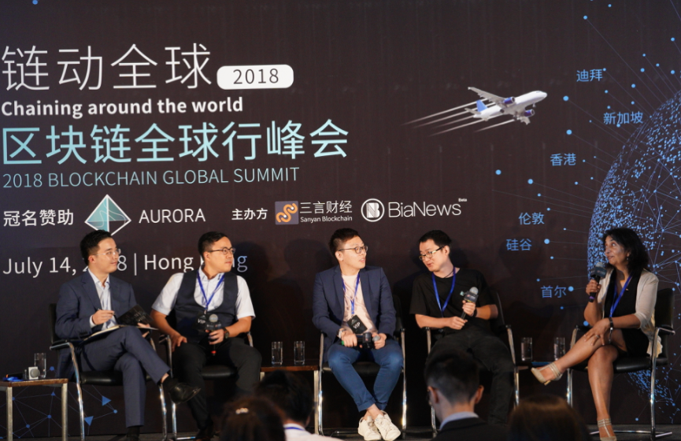

"链动全球"块链全球行峰会香港站圆桌讨论：区块链技术如何大规模应用？
区块链/技术
2018-07-15 15:37
Bianews
由Bianews和三言财经主办、Aurora极光链冠名赞助的“链动全球·2018区块链全球行峰会”第一站7月14日在香港举行，本次大会的主题为“探索.链接全球区块链”。 BTC media中国区负责人，Po.et中国区负责人周飘先生主持了区块链应用的圆桌讨论环节，以太坊华南和东南亚社区联首席经济顾问李智健先生，Aurora极光链创始人赵美军先生，香港区块链学会副会长、天使投资人Renu Bhatia女士和Dapp.com联合创始人兼CEO Kyle Lu先生参与了此次的讨论。周飘先生就当前以及未来区块链技术在生活中的应用与嘉宾们进行了讨论。 金融行业都是中心化的机制，去中心化的机制会损害他们的利益。那区块链如何与金融业结合落地呢？对于这个问题，香港区块链学会的副会长Renu称，现在的能源数据大都掌握在少数人手中，现在已经到了不能再中心化的地步，我们要去中心化，这就是现实。我们需要有企业级的区块链，或者是公有的区块链，这样才能去中心化，符合区块链的愿景。关键问题是这些链如何共同合作？首先，要在监管之下大规模开展去中心化的工作，这样才能吸引更多人使用；其次，我们需要教育公众，让使用区块链的用户去帮助我们吸引其他用户到去中心化的模式中来。 以太坊华南和东南亚社区联首席经济顾问及发起人、区块链产业分析师协会创办人李智健认为，传统银行系统都要合规，资本就要资产抵押，最好的资产抵押就是传统的白银和黄金。如果用区块链的话，就是重构了金融的信用。分布式管理不是最有效的，中央平台也不是最有效的，而中央平台分布式管理才是最有效的。